МЕСТО
Человек с бульвара Капуцинов
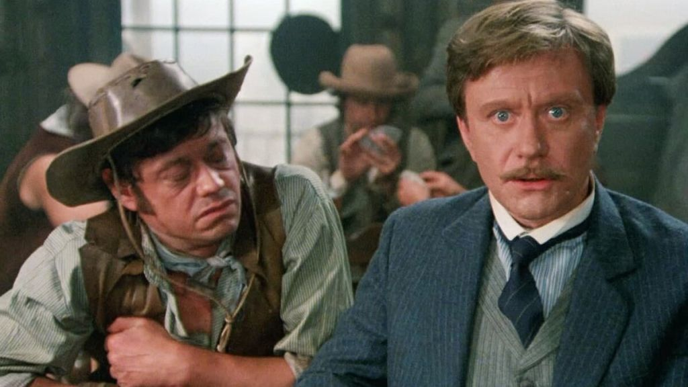
Это кино меняет людей (в прямом и переносном смысле). Прекрасная игра Андрея Миронова и Михаила Боярского и хорошо отыгранные драки.
Рейтинг начинается с последнего места. Первое место находится в самом конце страницы — прокручивай вниз, чтобы постепенно открыть весь топ.

Это кино меняет людей (в прямом и переносном смысле). Прекрасная игра Андрея Миронова и Михаила Боярского и хорошо отыгранные драки.
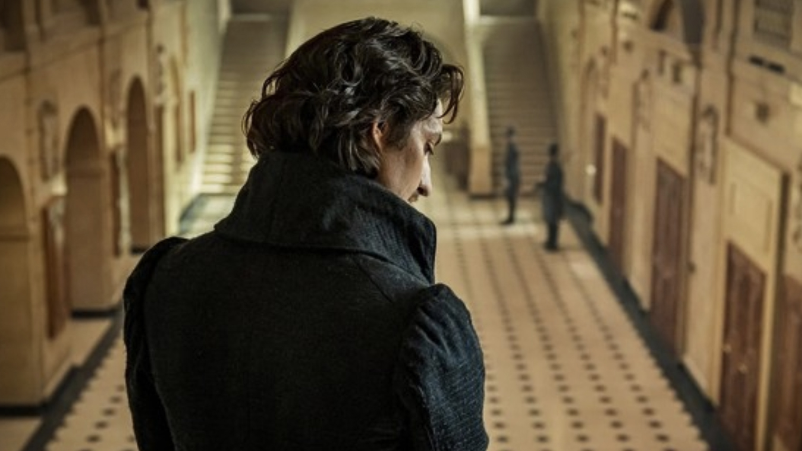
Пафосная экранизация романа Дюмы с крутыми декорациями и превосходной операторской работой. Фильм, несмотря на свою продолжительность, не кажется затянутым благодаря экшн-сценам и динамичному развитию сюжета.
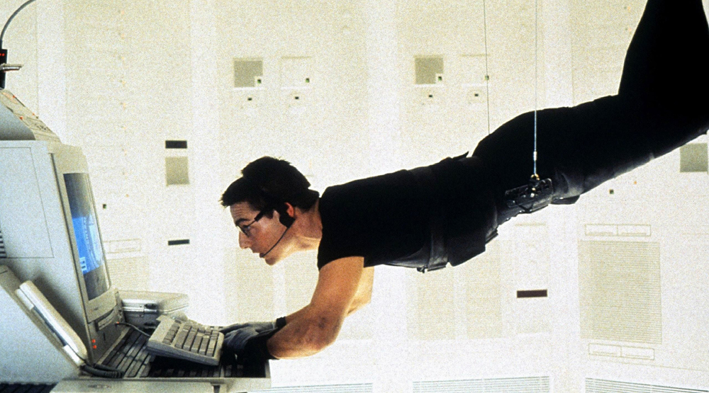
Шпионский фильм с Томом Крузом с захватывающим сюжетом. Приверженность Тома Круза к настоящим трюкам стала одной из причин популярности серии в целом. Стоит и отметить и заглавную мелодию фильма, которую знает даже тот кто не смотрел.

Этот фильм про лучшего кондитера в мире. Здесь есть сказочность, эксцентричность Джонни Деппа в роли Вилли Вонки и трогательный образ главного героя Чарли. Фильм привлекает своей жутковатой атмосферой, созданной Тимом Бёртоном.

Полицейскому Кевину поручают охрану секретарши преступника. Превосходно поставленный фильм с Джеки Чаном (я считаю что в этом фильме лучшие драки во всём кинематографе).
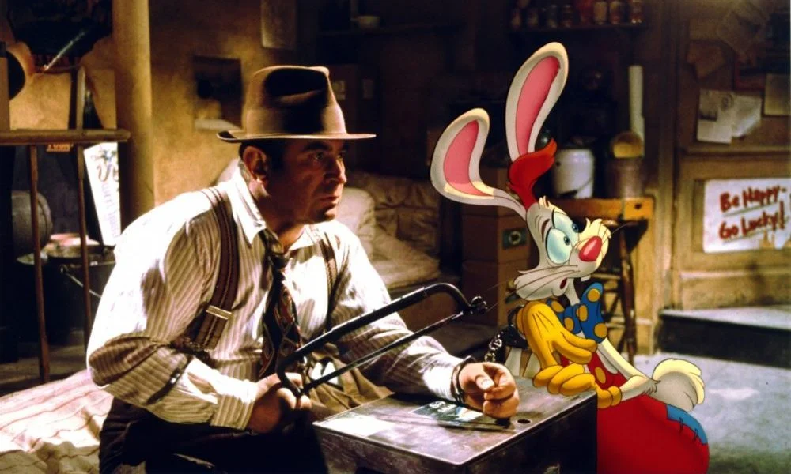
Инновационный фильм про мультяшек. Тут и смесь детективного нуара, пародии и абсурдной комедии. Персонажи это изюминка всего фильма, каждый из них уникален и интересный.

Комедия с Джимом Керри в роли мультяшного безумца. В этом фильме обилие сатиры, отсылок и шуток. Сюжет фильма происходит стремительно. В фильме каждая сцена вызывает улыбку. Это роль идеальна для Джима Керри, он чувствует себя комфортно в ней и отжигает.
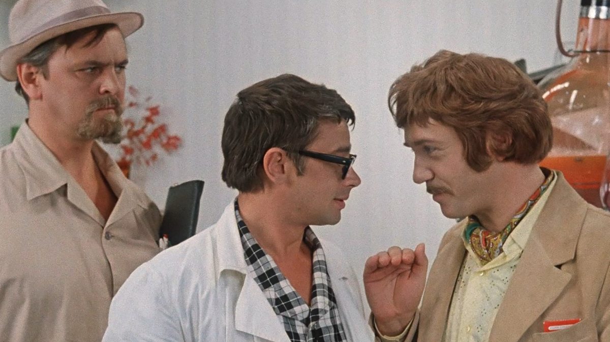
Комедия Леонида Гайдая по повести Булгакова. Эталон советского кинематографа (советский Назад в будущее). Стоит и упомянуть музыкальную составляющую фильма (она прекрасна)
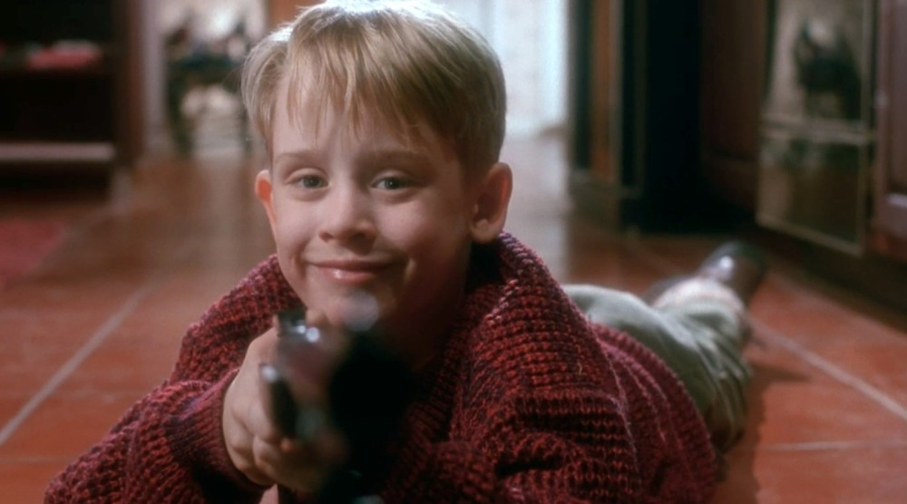
Этот фильм наверно знают абсолютно все. Каждый смотрел его на Новый год. А за что мы его любим? Конечно за все проделки Кевина над ворами.

Обилие экшена и юмора это то что фильм смог потянуть. Прикол в том что фильм российский, а выглядит как проект Marvel.
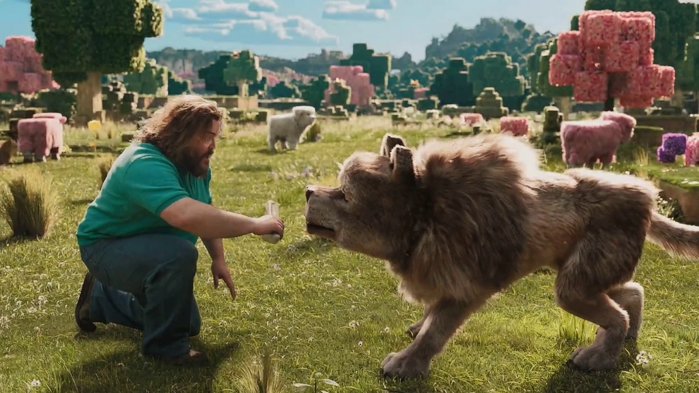
Это экранизация легендарной игры Minecraft. Фильм с крутой игрой Джека Блэка, крутыми шутками и той самой ламповой атмосферой игры.
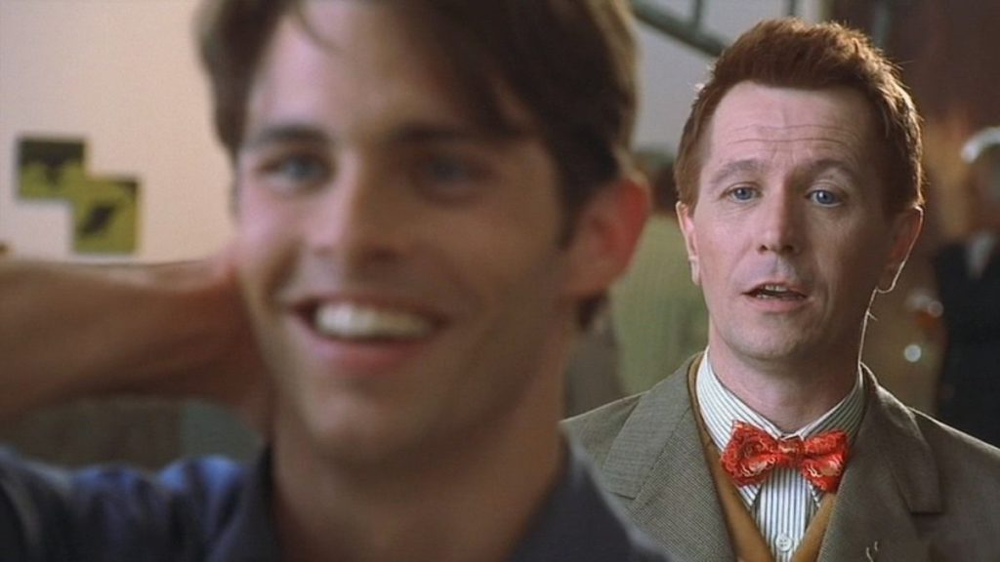
Запутанная история о принятии себя в комедийной обёртке. Гэри Олдмэн прекрасно отыграл своего персонажа и его харизма заражает.

Динамичный фильм Майкла Бэя о предательстве и правде. Иен Маккеллен и Скарлетт Йоханссон прекрасно отыграли свои роли, а сцен экшена в фильме зашкаливает.

Умопомрачительный фильм про полицейского под прикрытием. Супер смешная комедия разобранная на цитаты. Моя любимая цитата -"Кушать подано, садитесь жрать пожалуйста"

Напряжённый фильм с Джеки Чаном где потеря памяти у главного героя создаёт интригу и напряжение. Мне нравится финальная сцена на крыше и также ошеломляющий трюк Джеки Чана "прыжок с крыши".
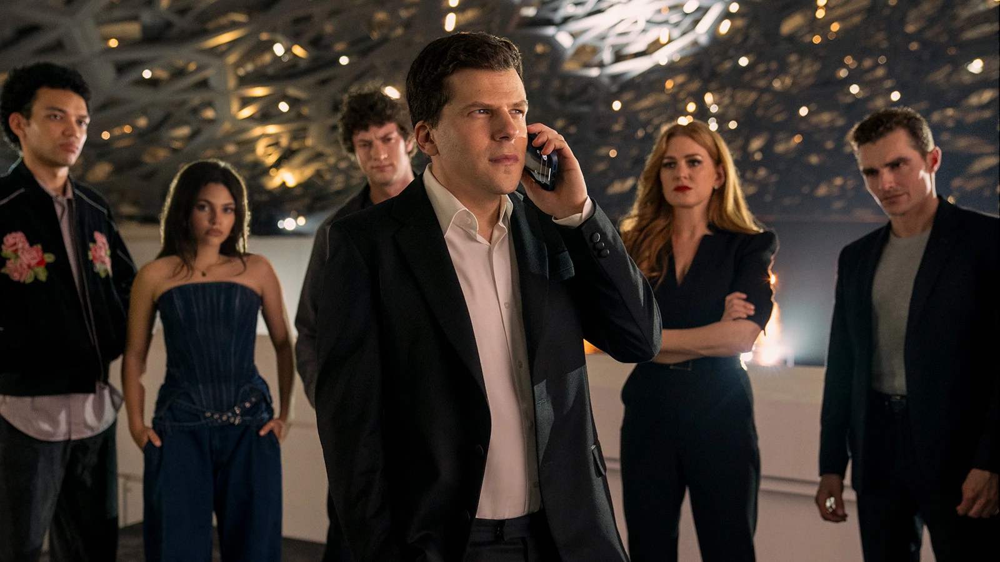
Команда фокусников делают аферу века виртуозно грабя банк. Режиссёр идеально сочетает нагнетающую атмосферу с запутанными фокусами.

Приключение на все времена. Учёный с хлыстом которого великолепно сыграл Харрисон Форд ищет давно потерянный ковчег. Этот фильм оказал огромное влияние в кинематограф ведь по сей день многие люди пародируют сцены из фильма.
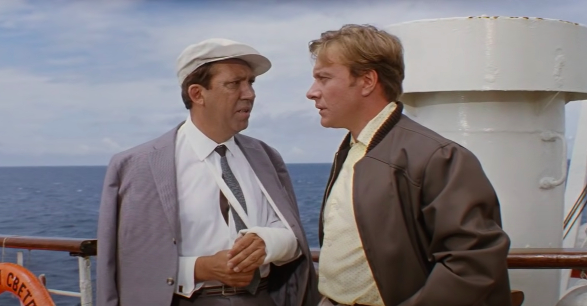
Рассеянный Семён Семёнович (Юрий Никулин) с бриллиантами в руке убегает от злоумышленников. Андрей Миронов и Анатолий Папанов создают дуэт на все времена. А Гайдай развлекается как может.
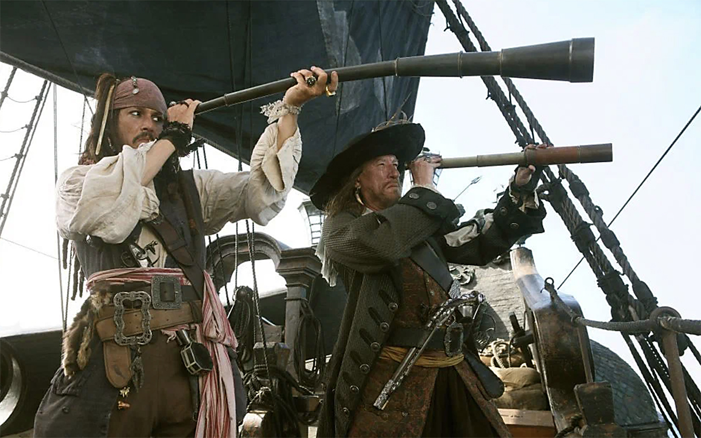
Этот фильм Дисней создал легендарных пиратов и их головокружительные приключения. Лучшая роль Джонни Деппа и по моему мнению одни из лучших костюмов в кино.

Это мой любимый военный фильм. Режиссёр восхитительно передал ощущение войны. Актёры сыграли на УРА!!! А спецэффекты сногсшибательные.
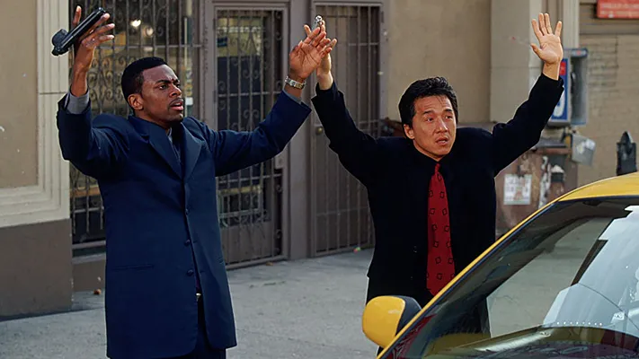
Задорное кино с Джеки Чаном и Крисом Такером после которого вы будете смеяться ещё очень долго.

Уморительный фильм о приключениях двух агентов посланных на секретную миссию. В фильме завораживающе показаны сцены погони и перестрелок, но самое главное в этом фильме по-моему мнению это химия главными между героями.

Изумительно поставленный фильм про известного сыщика Эркюля Пуаро. Фильм блестяще сочетает два жанра: детектив и ужастик (но ужастика в меру).
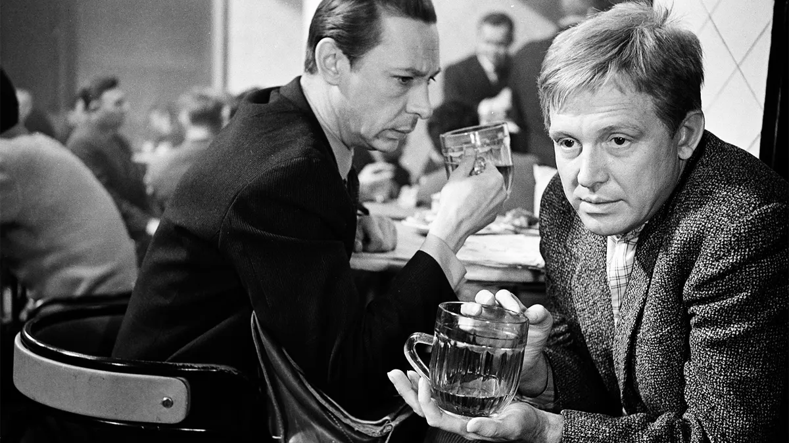
Чёрно-белая кинокомедия про честного угонщика машин Юрия Деточкина с лучшей в мире погоней и уморительными сценами.

Красивый документальный фильм про то как путешественники очень долго ищут снежного барса в горах Тибета. Могу точно сказать что фильм безумно прекрасный.
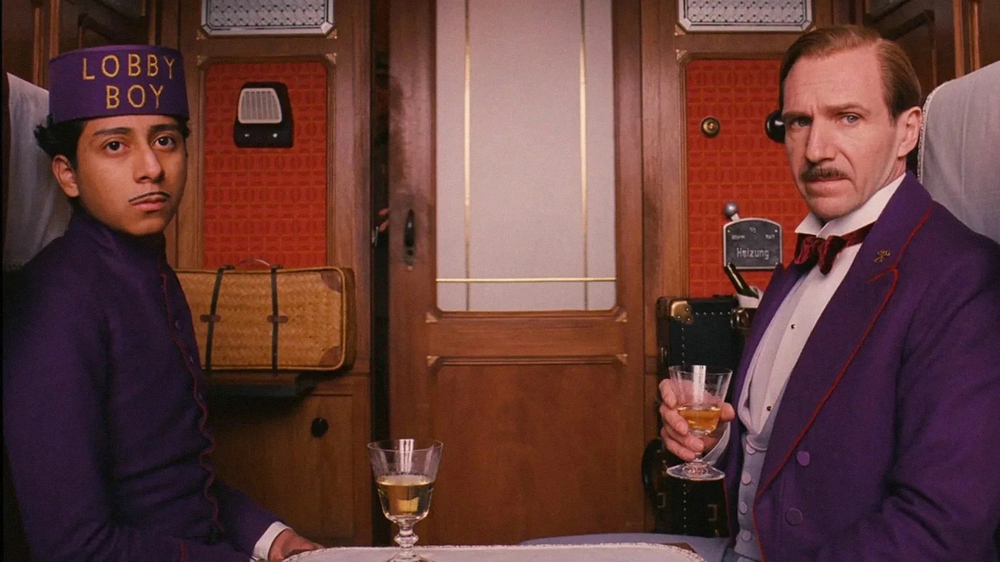
Уморительная комедия Уэса Андерсона со своим ламповым стилем. В этом фильме прекрасный актёрский состав, а также в фильме у каждого персонажа хорошо прописанный характер и цели.
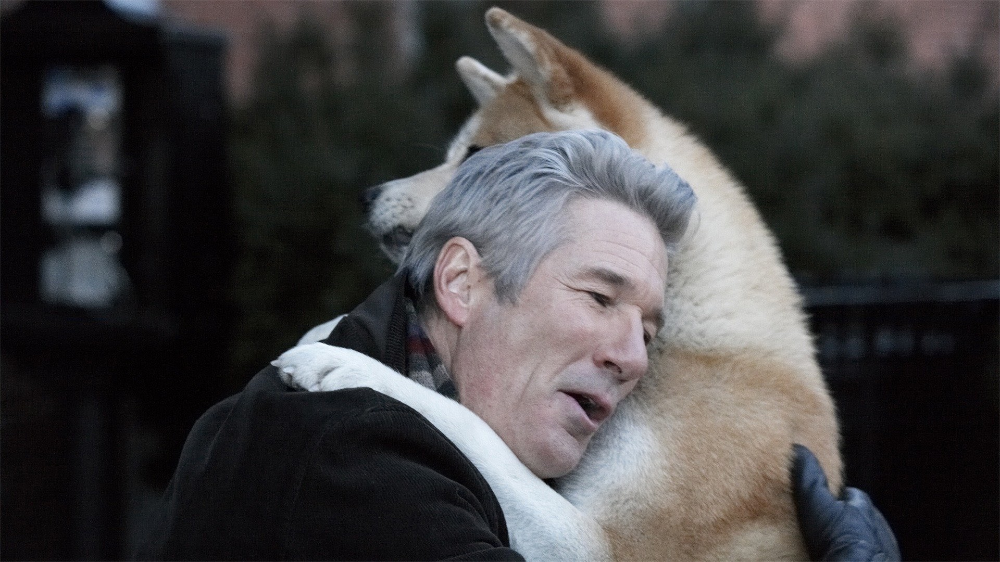
Самый трогательный фильм в кино, сразу запаситесь салфетками потому-что рыдать вы будете долго. Режиссёр прекрасно показал взаимосвязь между собакой и хозяином.
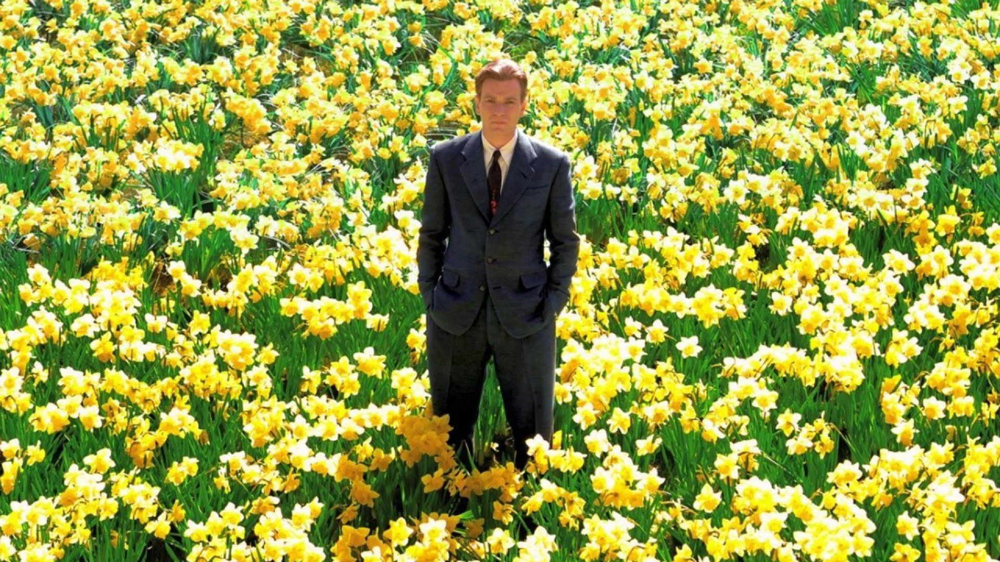
Фэнтезийный фильм Тима Бёртона с Иеном Маккелленом в главной роли. Этот фильм как фантазия ребёнка. Здесь уделяется много времени взаимоотношениям отца и сына. Фильм завораживает своим спокойствием и красотой.
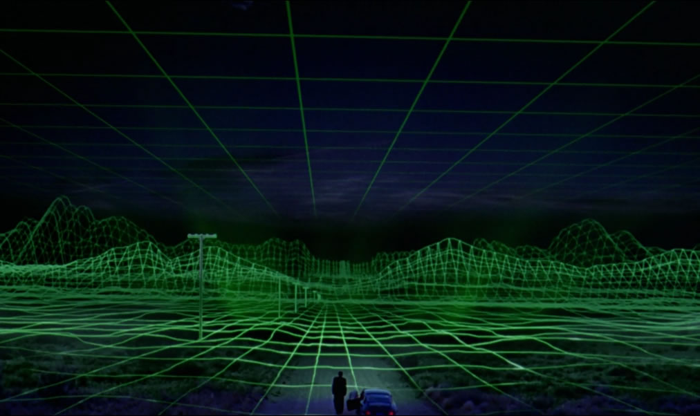
Научно-фантастический фильм про виртуальную реальность с запутанным сюжетом, мрачной атмосферой и детективным сюжетом в стиле нуар добавляют фильму глубины и привлекательности. Но его многие не заметили потому-что он вышел вместе с "Матрицей".
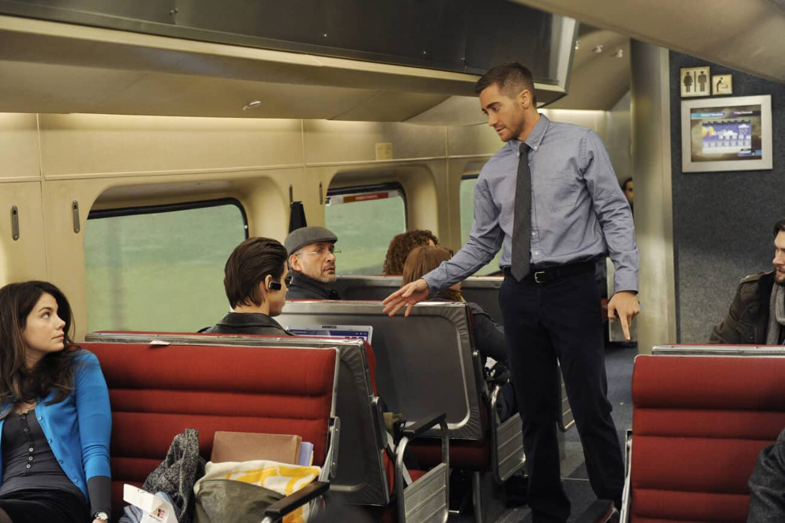
Захватывающий фильм с механикой Дня Сурка про спец агента который должен вычислить террориста за 8 минут. Динамичный сюжет, хорошо прописанные персонажи и удивительная игра Джейка Джилленхола.

Запутанный фильм с Киану Ривзом о ненастоящей реальности. Фильм который оставил больше вопросов чем ответов.

Пафос, сеттинг, сюжет вот что делает фильм особенным. Кэмерон сделал дилогию на все времена (есть другие части, но мы их пропустим). И кстати "I'll be back"
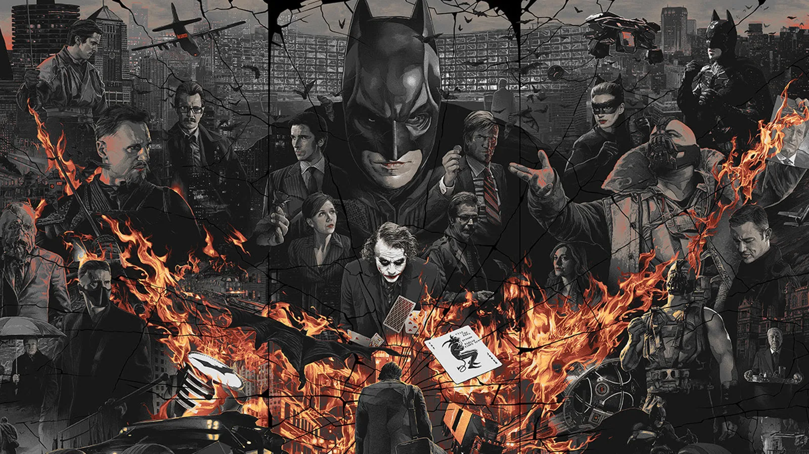
Мрачная история угасающего Готэма. Но у Готэма есть ещё лучик надежды– и это Бэтмен. Великолепная трилогия Нолана, не зря 2 часть занимает 3 место в топ 250 лучших фильмов по версии IMDb. Также хочу упомянуть великолепного Джокера Хита Леджера, он шикарен.

Сэм Рейми сделал одну из лучших трилогий про супергероев. Захватывающий сюжет, роскошная игра актёров и изысканная операторская работа.

Картина которая вдохновляет на многое. Невероятные пейзажи фильм завораживают, а актёрская игра Бенна Стиллера прекрасна (он кайфует от этой роли).
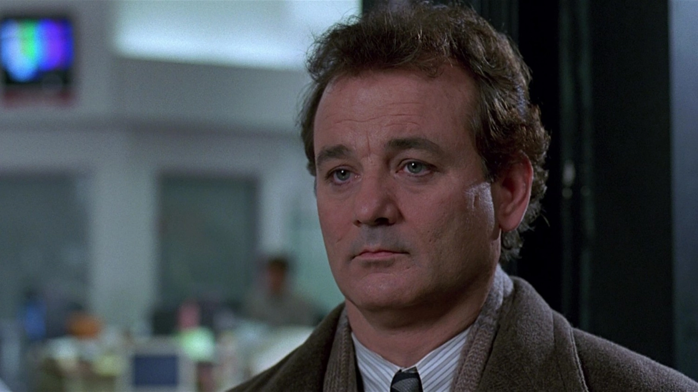
Фильм который изменил концепцию времени. Он разлетелся на цитаты и День Сурка начали повторять абсолютно все. Билл Мюррей очень правдоподобно сыграл человека который уже совсем обезнадёжился. .
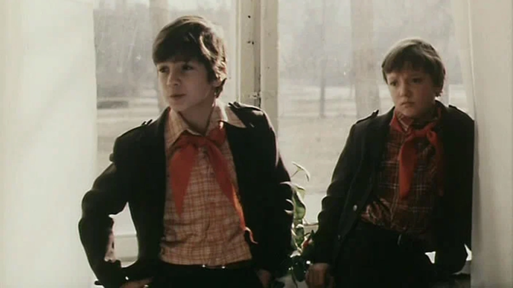
Советский мюзикл про двух лучших друзей. которые попадают в смешные, и за их попытки добиться расположения одноклассницы Маши. Кроме того, это прекрасная музыкальная комедия с весёлым юмором и шикарными песнями.
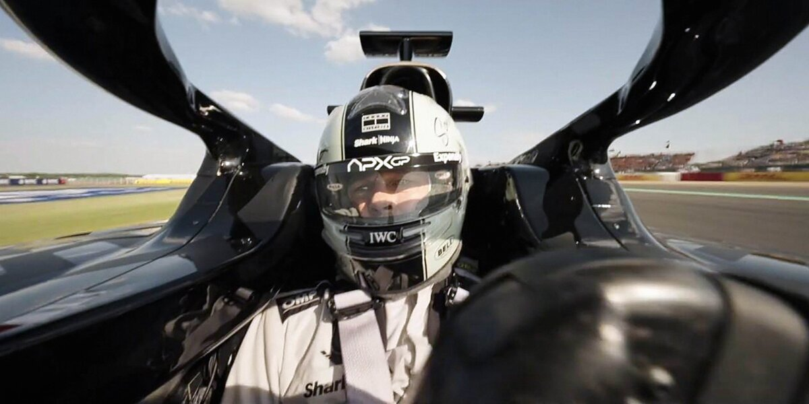
Потрясный фильм о Формуле 1, с Бредом Питом в главной роли. Бомбезные съемки и шикарная музыка. После этого фильма я влюбился в гонки, весь фильм я был на адреналине.

Блистательные фильмы с Дениелом Крейгом в роли агента 007. В этих фильмах интересный сюжет, юмор и напряженные сцены с высокими ставками, а также шикарный актерский состав и футуристичные заставки. И также почти каждый фильм имел номинацию и победы "За лучший саундтрек к фильму" на Оскаре.

Очень запутанный детектив с Дэниэлом Крэйгом в главной роли. У каждого свидетеля есть свой мотив и алиби. Все фильмы ты сидишь в напряжении и пытаешься угадать кто же убийца. Каждый фильм это как будто чтение романа Агаты Кристи.
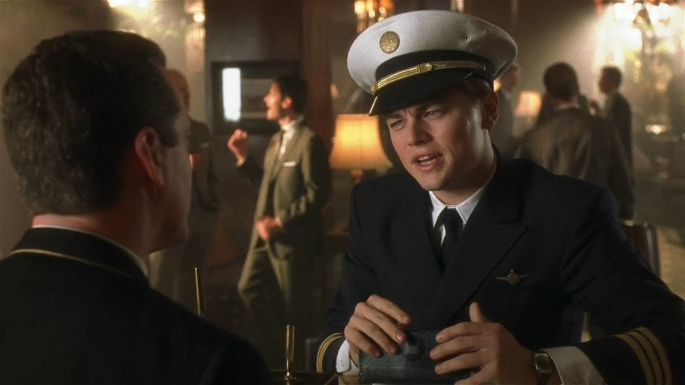
Этот фильм о молодом мошеннике который делает аферы на миллионы долларов. Стивен Спилберг интересно показал как "можно" украсть миллионы, а то как сыграл ДиКаприо просто восхитительно.
Захватывающий фильм с крутым актёрским составом и красивыми пейзажами. В этом фильме есть крутой пёс и команда спортсменов. Вкратце это восхитительный приключенческий фильм с юмором..

Прекрасный фантастический боевик с крутой графикой (особенно для того времени). Этот фильм произвёл фурор и навсегда останется в наших сердцах..
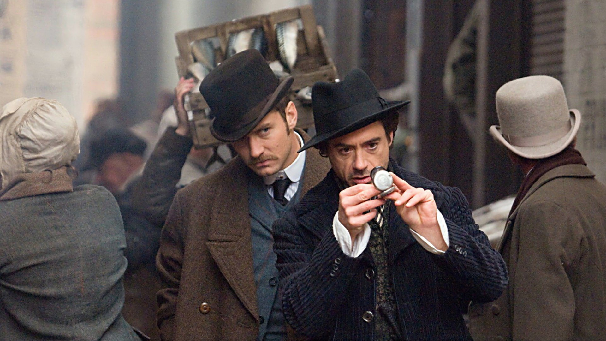
Чувствуется что это фильмы Гая Ричи, клёвая операторская работа и динамичный сюжет. Чего только стоит сцена драки Шерлока в первой части.

Милейшее роуд-муви с собаками с глубоким смыслом и несмотря на драматические моменты, в фильме много забавных ситуаций и шуток, которые делают его легким и приятным для просмотра.
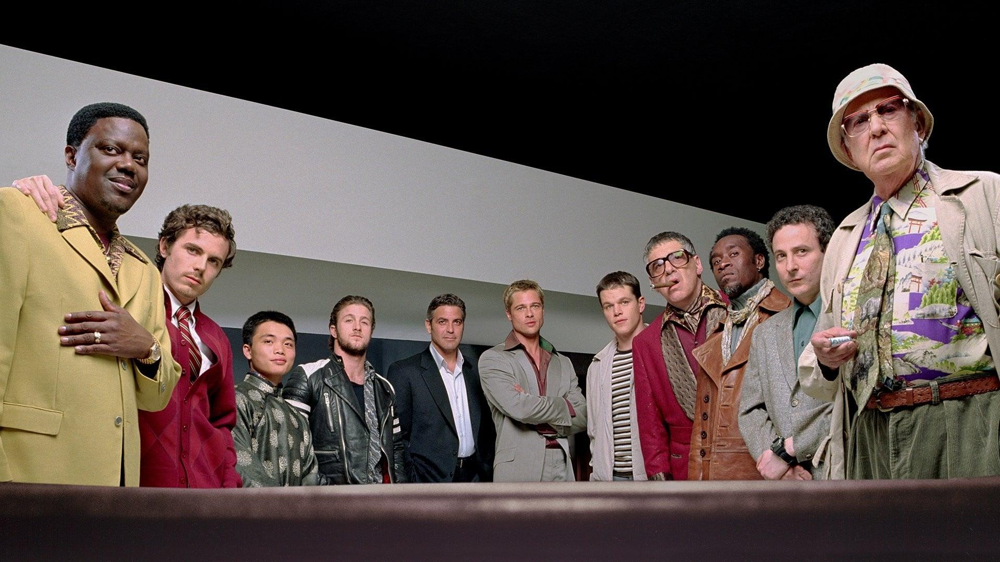
11 друзей грабят суперохраняемый банк. Гениально поставленный фильм где у каждого героя есть своя роль.
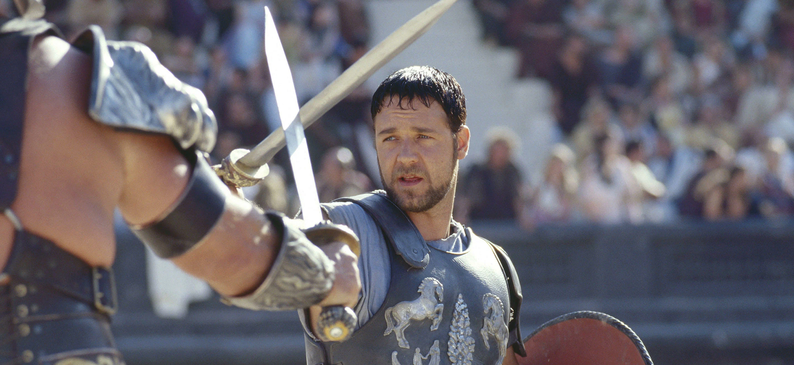
Фильм о доблести, мести и страданиях. Ридли Скотт мастерски показал как главный герой мстит за всё, а Рассел Кроу великолепно отыграл свою роль за которую он получил Оскар за лучшую мужскую роль. Не зря фильм получил свой Оскар за лучший фильм.

Одинокий Том Хэнкс в красивейшем фильме со смыслом и душой. Эта картина держит тебя в напряжении до самого конца.
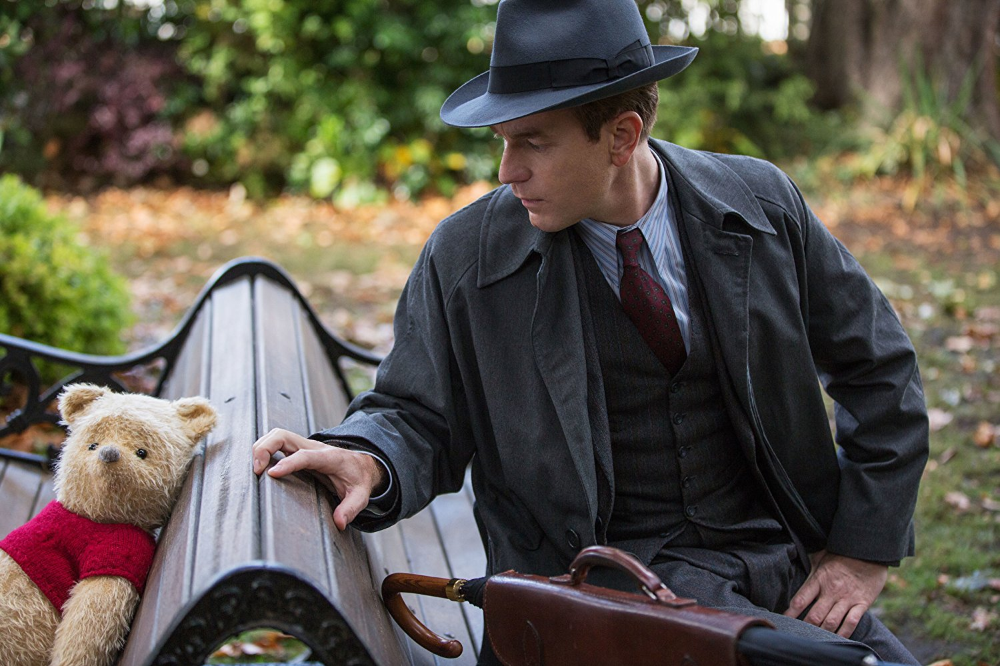
Для меня этот фильм прежде всего про доброту и о том что каждый взрослый всё ещё ребёнок. Винни и его друзья сделаны шикарно, а Юэн Макгрегор великолепен в роли Кристофера Робина.
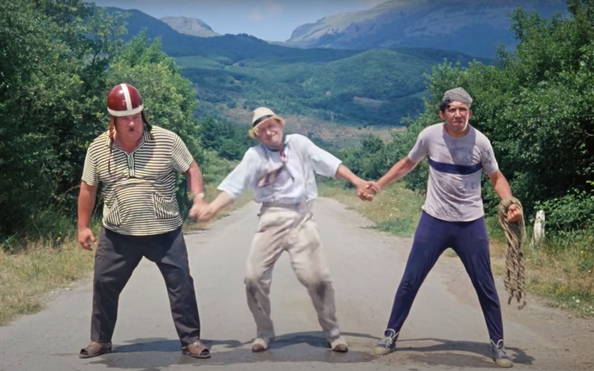
Одна из лучших комедий которую я смотрел, как всегда Гайдай сделал что-то невозможное. У меня слов нет, посмотрите обязательно (хотя я думаю все смотрели).
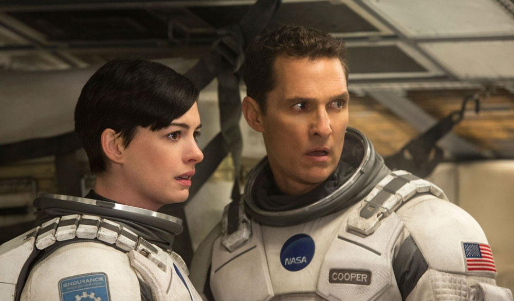
Самый красивый фильм который я смотрел. Кристофер Нолан сделал один из самых лучших научно-фантастических фильмов в мире. Также фильму помогли прекрасные актёры: Мэттью Макконахи и Энн Хэтэуэй. А также фильм получил Оскар за лучшие визуальные эффекты.

Духовные фильмы о верности и власти. Эти фильмы поднимают тему морали и долга. И как реальность может ловушкой, а ты даже этого не заметишь. Первая и вторая часть получили Оскары в категории "Лучший фильм" и много других премий и также они занимают 2 и 4 место в топ 250 фильмов по версии IMDb.
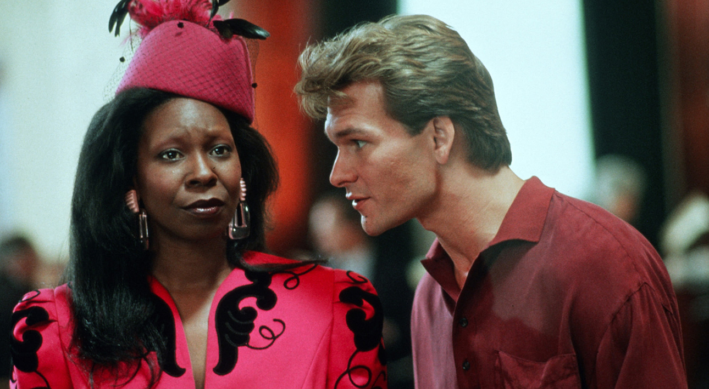
Один из самых необычных фильмов которых я смотрел. Шикарный сюжет, продуманные персонажи и море шуток. Хотя фильм и хочет сначала сказать что он мистический, но это совсем не так.

Это крутейший фильм до безумия. Актёрская игра, сцены перестрелок и шутки на высшем уровне. Хочу отметить пафосную актёрскую игру Алана Рикмана, он шикарен.

Очень трогательный фильм о поиске лекарства для пациентов от опасной болезни. После просмотра я очень долго плакал (если вы готовы к такому прошу к просмотру). Не забуду и отметить прекрасную игру Роберта де Ниро и Робина Уильямса которая произвела на меня впечатление.
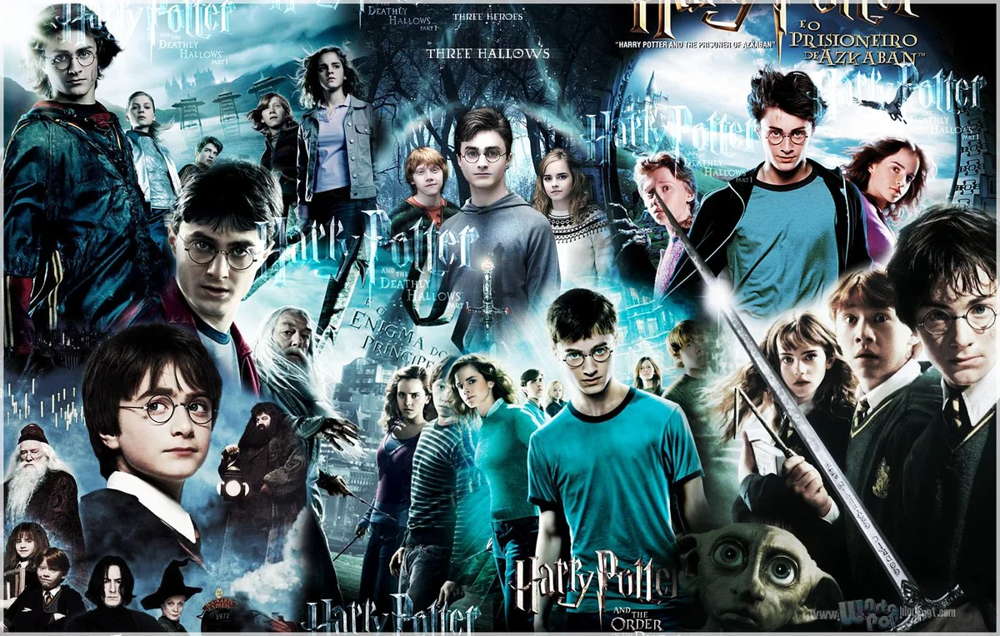
Я не смог выбрать один фильм, я считаю что все эти фильмы надо смотреть одним целым, ведь это одно из лучших фэнтези во всём мире.

Это удивительное кино, оно про то как этот мир может быть жесток и о том что ты сам себе хозяин и сам в праве решать кто ты есть. Это лучшая роль Джима Керри в кино, хотя он все его привыкли видеть в комедиях.
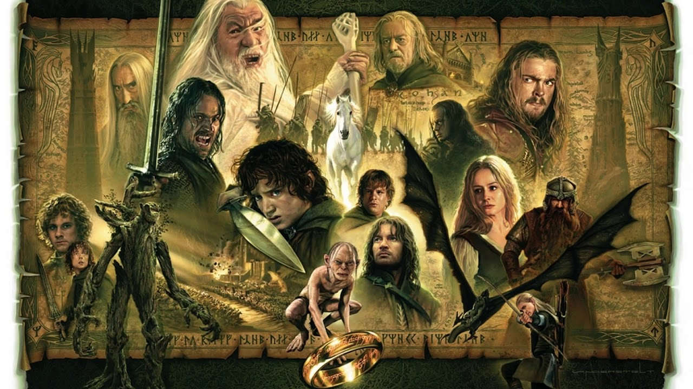
Захватывающая трилогия о маленьких хоббитах в Средиземье. Книги сами по себе толстые, но Джордж Лукас смог экранизировать их великолепно. Костюмы, локации и персонажи шикарны! Не зря 3-я часть выиграла Оскар в категории "Лучший фильм".
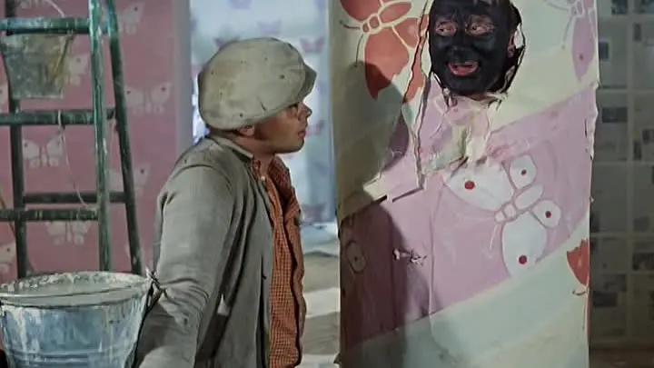
Моя любимая комедия Гайдая, ведь он смог уместить столько шуток в один фильм. Также в фильме полно запоминающихся персонажей которые навсегда останутся в моём сердце.
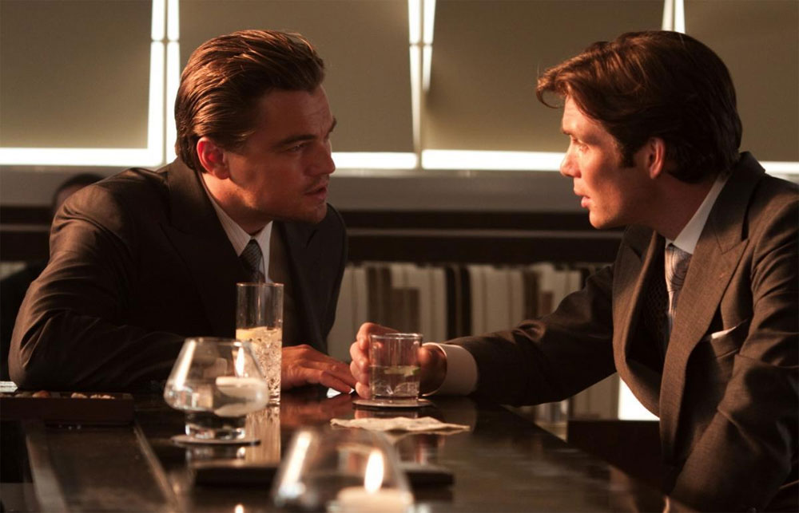
Легендарный фильм про сны. Нолан выбрал необычный сюжет и не промахнулся. Динамичный сюжет который держит тебя в тонусе до самого конца, а актёрский состав просто удивительный. Также он получил несколько премий Оскар.

Лёгкий фильм с глубоким смыслом и в первую очередь позитивен и полон добродушия, демонстрируя не только печальные, но и другие ситуации. И это фильм с СОБАЧКАМИ!!!!!!

Моя любимая научно-фантастическая трилогия ведь даже спустя 40 лет она сногшибателена. Актёрская игра, локации, сюжет всё это невероятно.
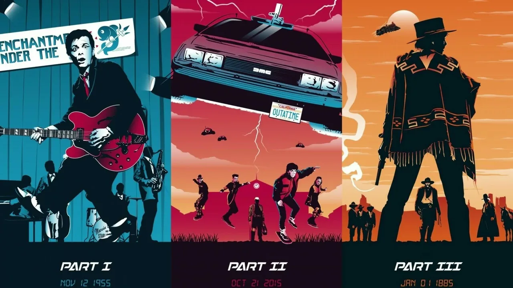
Моя любимая научно-фантастическая трилогия ведь даже спустя 40 лет она сногшибателена. Актёрская игра, локации, сюжет всё это невероятно.
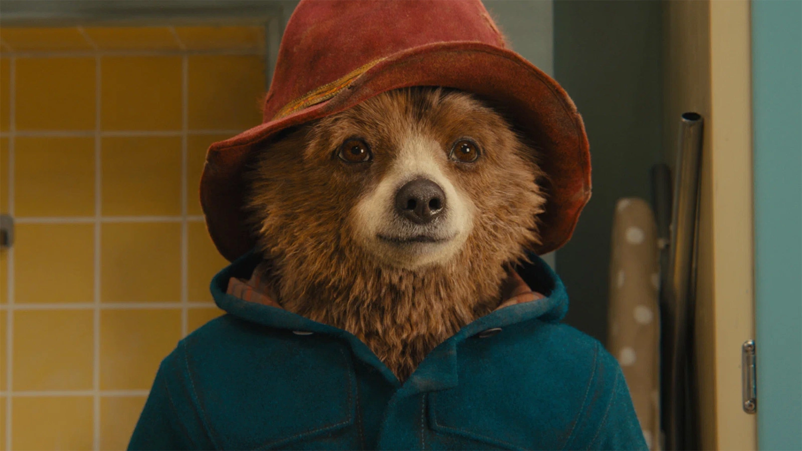
Ламповая трилогия про известного любителя мармелада Паддингтона. Эти три фильма полны забавными ситуациями, юмором и нескончаемой добротой. Их можно пересматривать и пересматривать и всегда улыбаться.